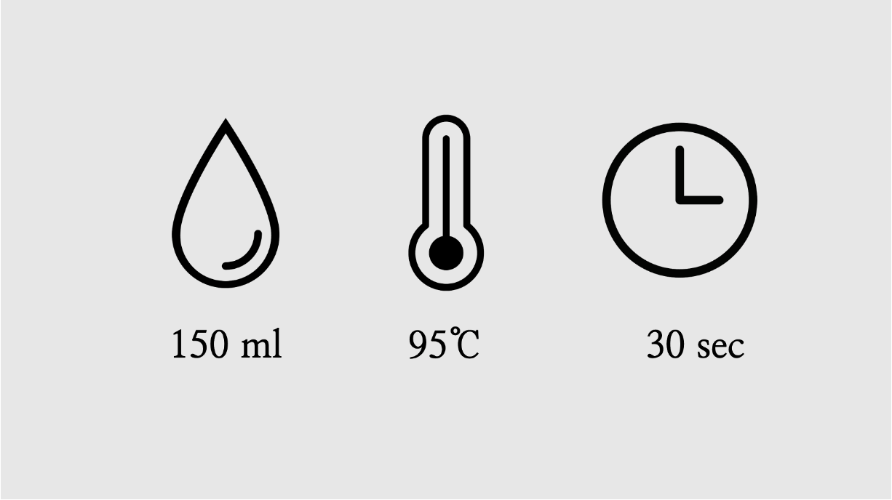
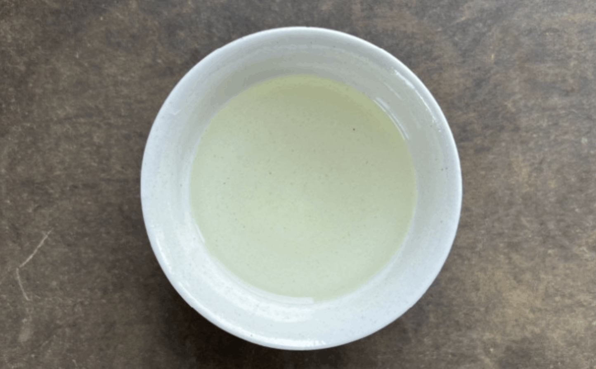
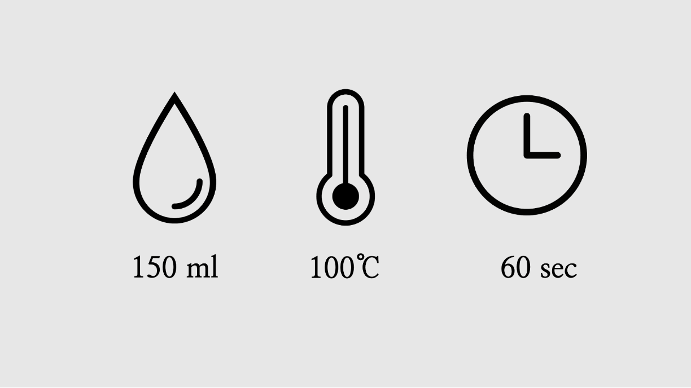

여름의 시작을 알리는 개강다회
기다리던 방학의 여유로움과 함께, 설다연의 여름학기도 활기차게 문을 열었습니다.
오늘 개강다회에 발걸음해 주신 모든 분들을 진심으로 환영합니다!
바쁜 일상과 학업에서 잠시 벗어나,
방학의 편안함을 온전히 누리는 시간이 되시길 바랍니다.
싱그러운 여름 향기를 담은 차 한 잔과 함께,
좋은 사람들과 다정한 이야기를 나누며 부담 없이 즐겁고 행복한 시간 보내다 가세요.
즐거운 다회를 위한 유의사항
즐거운 다회를 즐기기 위해서 다음 수칙들을 한번씩 읽어주세요.
언제든지 필요한 것이 있으시다면 주변의 운영진을 찾아주시면 언제든 기쁜 마음으로 도와드립니다.
언제든지 필요한 것이 있으시다면 주변의 운영진을 찾아주시면 언제든 기쁜 마음으로 도와드립니다.
뜨거운 물을 조심해주세요!
뜨거운 물이 항상 함께하기 때문에 혹시라도 쏟지 않도록 항상 주의해주세요.
깨지기 쉬운 다구들에 주의해주세요!
찻잔, 개완, 공도배 같은 도구들은 모두 깨지기 쉬워요.
항상 신경써서 조심스럽게 다뤄주세요.
항상 신경써서 조심스럽게 다뤄주세요.
차는 즐거운 마음으로 마실 때 가장 맛있습니다!
소개된 우림법과 같은 정석적인 방법들에 너무 얽매이실 필요 없습니다.
좋은 사람들과 웃으며 즐기는 차가 제일 맛있습니다!
항상 가볍고 즐거운 마음으로 즐겨주세요.
좋은 사람들과 웃으며 즐기는 차가 제일 맛있습니다!
항상 가볍고 즐거운 마음으로 즐겨주세요.
01
위스키 캐스크 홍오룡 26春
위스키 통에서 쿨쿨 잔 홍오룡

홍오룡을 위스키 통에서 숙성하여 위스키 같은 묵직하고 향긋한 느낌을 더했습니다.
술의 향긋함을 즐기시는 분들과 알코올을 멀리하시는 분들 모두가 즐기시기 좋습니다.
봄 사계춘 차청으로 만들어 산뜻한 느낌이 매력적입니다.
산뜻한 차와 오크통의 향이 이루는 조화에 집중해보세요.
술의 향긋함을 즐기시는 분들과 알코올을 멀리하시는 분들 모두가 즐기시기 좋습니다.
봄 사계춘 차청으로 만들어 산뜻한 느낌이 매력적입니다.
산뜻한 차와 오크통의 향이 이루는 조화에 집중해보세요.

위스키, 초콜릿, 과일의 향
‘산뜻함과 묵직한 향의 조화’
인위적인 가향이 아닌 실제 위스키 숙성에 사용되는 오크통에 찻잎을 넣어 향을 입혔습니다. 홍오룡 찻잎 본연의 푸룬, 포도, 석류와 같은 과일 향들이 오크통 숙성으로 더 한층 더 묵직해졌습니다. 과일향과 잘 어우러지는 묵직한 초콜릿과 위스키향을 느껴보세요.
‘산뜻함과 묵직한 향의 조화’
인위적인 가향이 아닌 실제 위스키 숙성에 사용되는 오크통에 찻잎을 넣어 향을 입혔습니다. 홍오룡 찻잎 본연의 푸룬, 포도, 석류와 같은 과일 향들이 오크통 숙성으로 더 한층 더 묵직해졌습니다. 과일향과 잘 어우러지는 묵직한 초콜릿과 위스키향을 느껴보세요.

차 우림법
뜨거운 온도로 우려도 좋지만 향을 독특한 향을 즐기기 위해서 온도를 살짝 낮춰서 천천히 오랫동안 우려드시거나 냉침하여 시원하게 즐기셔도 좋습니다.
뜨거운 온도로 우려도 좋지만 향을 독특한 향을 즐기기 위해서 온도를 살짝 낮춰서 천천히 오랫동안 우려드시거나 냉침하여 시원하게 즐기셔도 좋습니다.
02
휴심 백차
과일향이 매력적인 중작급 백차

4월 말부터 5월 중순까지 채엽한 중작 잎으로 만든 백차입니다.
중작은 찻잎이 모두 펴지고 세작보다 더 자란 상태에서 채엽한 잎입니다.
중작 잎을 추가적인 가공 없이 잘 건조시켜 깔끔하고 풍미 있는 백차로 만들었습니다.
중작은 찻잎이 모두 펴지고 세작보다 더 자란 상태에서 채엽한 잎입니다.
중작 잎을 추가적인 가공 없이 잘 건조시켜 깔끔하고 풍미 있는 백차로 만들었습니다.

높은 발효도의 백차
‘농익은 과일향과 풍부한 구감’
휴심백차는 중작급 잎을 깊게 발효시켜 만든 백차로, 중작 잎에서 찾아볼 수 있는 풍부한 꽃향기와 깊고 진한 맛을 즐길 수 있습니다. 찻잎을 깊게 발효시켜 높을 발효도를 지니고 있어, 그 만큼 깊은 향이 있습니다. 깊은 발효에서 나오는 과일향과 구감에 집중해서 즐겨보세요.
‘농익은 과일향과 풍부한 구감’
휴심백차는 중작급 잎을 깊게 발효시켜 만든 백차로, 중작 잎에서 찾아볼 수 있는 풍부한 꽃향기와 깊고 진한 맛을 즐길 수 있습니다. 찻잎을 깊게 발효시켜 높을 발효도를 지니고 있어, 그 만큼 깊은 향이 있습니다. 깊은 발효에서 나오는 과일향과 구감에 집중해서 즐겨보세요.

차 우림법
너무 높은 온도에서 차를 우리지 않도록 주의해주세요. 차의 은은한 향을 느끼기 위해서는 차를 우린 직후 뜨거울 때에 차를 드셔보세요. 지나치게 오랜 시간동안 너무 뜨거운 물로 우려 잎이 익지 않도록 주의해주세요.
너무 높은 온도에서 차를 우리지 않도록 주의해주세요. 차의 은은한 향을 느끼기 위해서는 차를 우린 직후 뜨거울 때에 차를 드셔보세요. 지나치게 오랜 시간동안 너무 뜨거운 물로 우려 잎이 익지 않도록 주의해주세요.
03
전수공 노수 금훤
일출을 보며 산을 오른 정성 끝에 얻은 차

대만 아리산의 야방 다원에서 생산된 차입니다. 이런 고산 다원에 올라가기 위해서는 아주 이른 새벽부터 일출을 보며 산에 올라야 합니다.
자연의 방식을 추구하는 다원인 만큼 생산량도 적고 많은 정성이 필요합니다.
이렇게 귀하게 얻어진 차인 만큼 특별한 향을 느낄 수 있게 해주는 차입니다.
자연의 방식을 추구하는 다원인 만큼 생산량도 적고 많은 정성이 필요합니다.
이렇게 귀하게 얻어진 차인 만큼 특별한 향을 느낄 수 있게 해주는 차입니다.

정석적이지만 풍부한 향
무난함이 주는 부드러운 매력
독특한 향이 개성적으로 느껴지거나 빼어난 향이 있지는 않지만, 그런 향들보다 편안하고 깊은 향이 촘촘하게 모여있습니다. 이런 무난한 평범함이 부드러운 매력을 느낄 수 있게 해줍니다. 이런 매력 덕분에 계속 우려 먹어도 질리지 않습니다.
무난함이 주는 부드러운 매력
독특한 향이 개성적으로 느껴지거나 빼어난 향이 있지는 않지만, 그런 향들보다 편안하고 깊은 향이 촘촘하게 모여있습니다. 이런 무난한 평범함이 부드러운 매력을 느낄 수 있게 해줍니다. 이런 매력 덕분에 계속 우려 먹어도 질리지 않습니다.

차 우림법
물 온도는 가능한 뜨거운 것이 좋습니다. 차의 양은 조금 적게 넣어 찻잎이 충분히 펼쳐질 수 있게 한다면 더욱 즐기기 좋습니다.
물 온도는 가능한 뜨거운 것이 좋습니다. 차의 양은 조금 적게 넣어 찻잎이 충분히 펼쳐질 수 있게 한다면 더욱 즐기기 좋습니다.